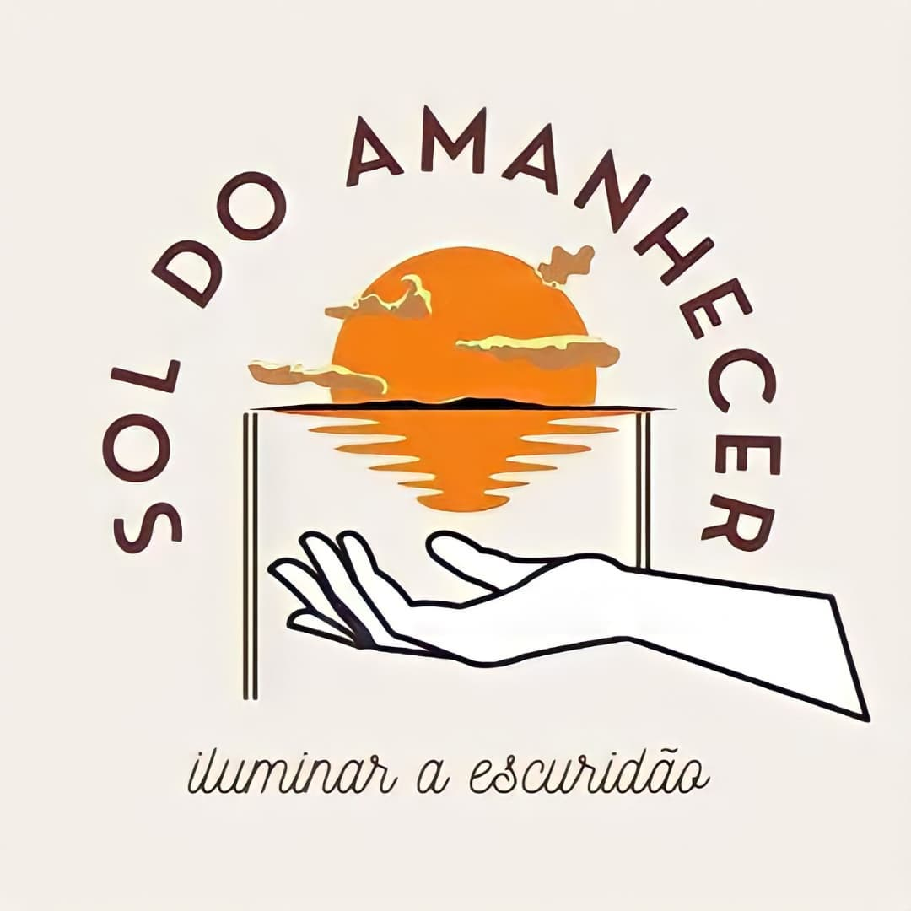

O projeto social Sol do Amanhecer, fundado em 22 de novembro de 2019, é uma organização não governamental (ONG) sem fins lucrativos com intuito de ajudar a sociedade que passam por vários tipos de dificuldades, seja financeira, emocional ou de locomoção. Visando a sociedade menos favorecida, estuda-se a melhor atividade possível para realizar no local ou bairro pensando na logística, como doação de cestas básicas para famílias necessitadas, distribuição de doces para as crianças, brincadeiras e gincanas para lar de crianças e de idosos, visitação e doação de rações para a causa animal, recolher lixo em praias ajudando o meio ambiente, entre outras atividades.
Atualmente, todo recurso financeiro do projeto é dedicado as nossas ações a sociedade e divulgadas em nosso Instagram (@soldoamanhecer1). Por ser uma causa social recente, não contamos com uma sede própria, porém temos vários meios de contato - como e-mail, WhatsApp, Facebook, Instagram- onde há a interação com o público que se interessa a conhecer nosso trabalho com voluntários dedicados a causa em vários bairros de Maceió.
